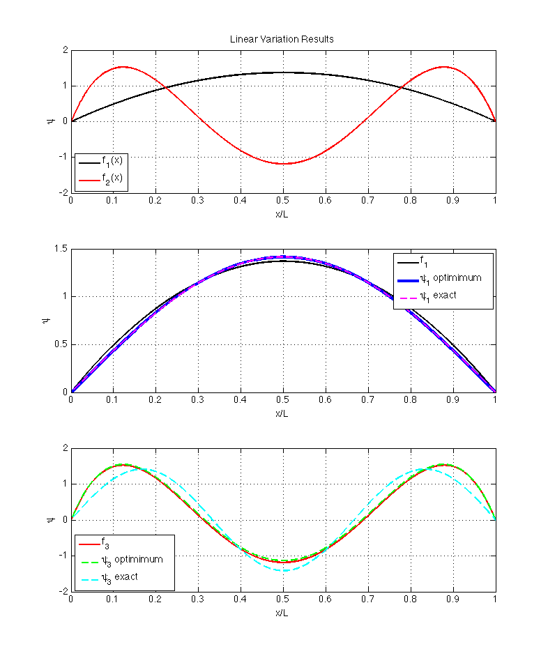
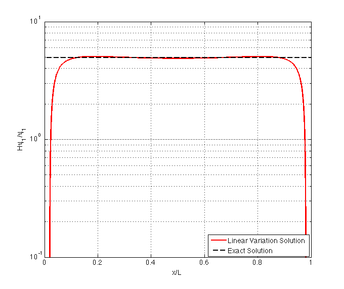

Contents
%LinearVariationInOrthonormalBasis.m % %This script checks the pencil/paper solution for the linear variation %problem. % %Tom Allison 10/25/2013
Preliminaries
set(0,'DefaultLineLineWidth',2);
hbar = 1;
m = 1;
L = 1;
x = linspace(0,L,1E4);
dx = x(2)-x(1);
Part a)
The eigenvectors found are eigenvectors of the H matrix but the H matrix is only a partial representation of the true hamiltonian due to the finite basis set. The true matrix representation of the Hamiltonian would be infite dimensional. If the basis has the abillity to completely represent an eigenfunciton (c.f. the one parameter variation problem, part a), we can find a true eigenfunciton with this method, but this is not the general case.
Part b)
% Define functions N1 = (sqrt(30)/L^(5/2)); N2 = (132.816/L^(9/2)); f1 = N1*(x.*(L-x)); f2 = N2*x.*(L-x).*( (x-L/2).^2 - L^2/28); % using handworked deriviatives (SEE SCANNED PDF) Hf1 = -hbar^2/(2*m)*(-2)*N1; Hf2 = -hbar^2/(2*m)*N2*(12*f1/N1 -17/7*L^2);
Calculate integrals and construct matrices
H11 = dx*trapz(f1.*Hf1); H21 = dx*trapz(f2.*Hf1); H12 = H21; % make it exactly equal so there are no problems with diagonlization H22 = dx*trapz(f2.*Hf2); %H12 = dx*trapz(f1.*Hf2); %sanity check on Hf2 this should equal Hf1 % contruct Hamiltonian matrix H = [H11 H12; H21 H22]; % Verify that basis is orthonormal S11 = dx*trapz(f1.*f1); S22 = dx*trapz(f2.*f2); S12 = dx*trapz(f1.*f2);
Diagonalize matrix and find functions
% find eigenvectors and eigenvalues using MATLAB's eig command. % the (normalized) eigenvectors are the columns of the V matrix % the eigenvalues are the diagonal values of the D matrix [V,D] = eig(H); % construct functions found variationally psi1 = -(V(1,1)*f1 + V(1,2)*f2); psi3 = (V(2,1)*f1 + V(2,2)*f2);
Compare energies
Let's check the eigenenergies found variationally are in fact higher than the exact solutions.
E1 = D(1,1) E1exact = hbar^2*pi^2/(2*m*L^2) E3 = D(2,2) E3exact = hbar^2*3^2*pi^2/(2*m*L^2)
E1 =
4.9349
E1exact =
4.9348
E3 =
51.0654
E3exact =
44.4132
Compare wavefunctions found using polynomial basis
figure(1); subplot(3,1,1); hf1 = plot(x,f1,'k'); hold on hf2 = plot(x,f2,'r'); hold off xlabel('x/L'); ylabel('\psi'); legend([hf1,hf2],'f_1(x)','f_2(x)','Location','SouthWest'); grid on title('Linear Variation Results'); subplot(3,1,2); hf1 = plot(x,f1,'k'); hold on hpsi1 = plot(x,psi1,'b','LineWidth',4); hexact = plot(x,sqrt(2/L)*sin(pi*x/L),'m--'); hold off xlabel('x/L'); ylabel('\psi'); legend([hf1,hpsi1,hexact],'f_1','\psi_1 optimimum','\psi_1 exact'); setfigfont(1,14); grid on subplot(3,1,3); hf2 = plot(x,f2,'r'); hold on hpsi3 = plot(x,psi3,'g--'); hexact = plot(x,sqrt(2/L)*sin(3*pi*x/L),'c--'); hold off xlabel('x/L'); ylabel('\psi'); legend([hf2,hpsi3,hexact],'f_3','\psi_3 optimimum','\psi_3 exact',... 'Location','SouthWest'); setfigfont(1,14); grid on
Part c)
The optimimum linear combination functions found in part b) are not the eigenfunctions of the Hamiltonian. For this problem, we know that the eigenfunctions of the Hamiltonian are sin(n*pi*x/L), and our polynomials only make approximations to this. We can compare Hpsi with psi to see how far away from an eigenfunction we are. If we have an eigenfunction Hpsi/psi should be a constant.
Hpsi1 = -(V(1,1)*Hf1 + V(1,2)*Hf2); figure(2); h1 = semilogy(x,Hpsi1./psi1,'r'); hold on hexact = semilogy(x,E1exact*ones(1,length(x)),'k--'); hold off grid on ylabel('H\psi_1/\psi_1'); xlabel('x/L'); legend([h1,hexact],'Linear Variation Solution','Exact Solution',... 'Location','SouthEast'); axis([0,1,1E-1,1E1]); setfigfont(2,14);
Warning: Negative data ignored Warning: Negative data ignored Warning: Negative data ignored Warning: Negative data ignored Warning: Negative data ignored